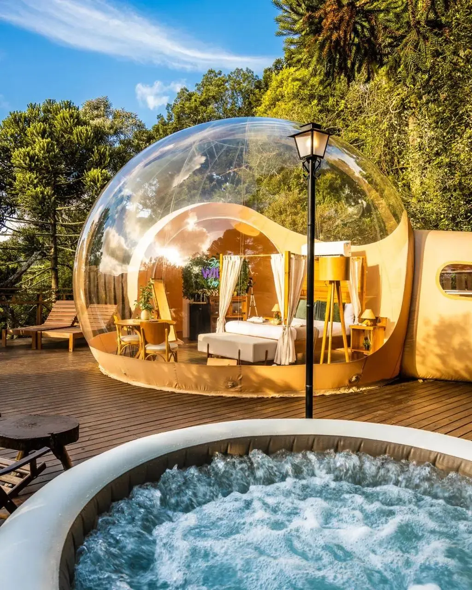

Zion Collection · Zion Land Bank
Seu terreno, sua ideia ou seu empreendimento. Vamos conhecer o que você quer construir.
Faça seu diagnóstico gratuito e descubra o que já está organizado e quais passos merecem atenção para começar, estruturar ou expandir seu negócio de hospedagem.
Fazer meu diagnóstico gratuito
Leva cerca de 3 minutos. Gratuito.
Antes de começar
Algumas perguntas que valem a pena
- Quanto tempo e energia você já dedicou a essa ideia ou a esse lugar?
- Você tem um plano, ou ainda são possibilidades soltas?
- O que já existe de infraestrutura, e o que ainda falta saber?
- O que você apresentaria hoje a um possível parceiro?
- Qual seria um próximo passo coerente com a sua região e com o mercado?
O diagnóstico não julga o seu patrimônio nem promete resultado. Ele organiza o que você já tem e mostra, com clareza, o que merece atenção agora.
Diagnóstico gratuito
Vamos começar
Quem está por trás
Zion Collection · Zion Hotel Group International
Fundada por Bruno Chaerk, com mais de 20 anos em hotelaria internacional. A Zion opera o próprio glamping desde 2020, em duas sedes e dois biomas, e ajuda proprietários a organizar e desenvolver projetos de hospedagem.